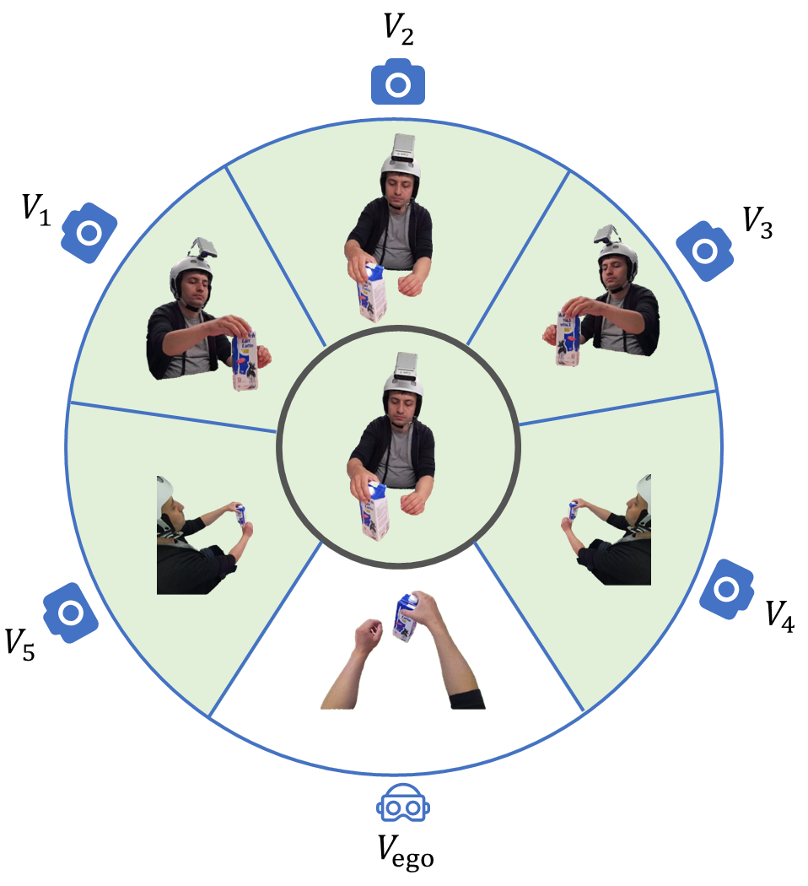

|
Boshen Xu I am a PhD student at Renmin University of China under the supervision of Professor Qin Jin at AIM3 Lab. |

|
ResearchI'm interested in computer vision and embodied AI. |
|  |
Prompt-Oriented View-agnostic Learning for Egocentric Hand-Object Interaction in the Multi-view World
Boshen Xu, Sipeng Zheng, Qin Jin ACM MM, 2023 We use multi-view third-person videos to pre-train model and enable view adaptation to unseen views especially egocentric view via visual prompt tuning. |